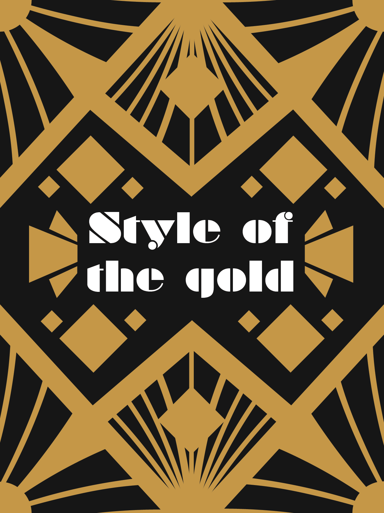
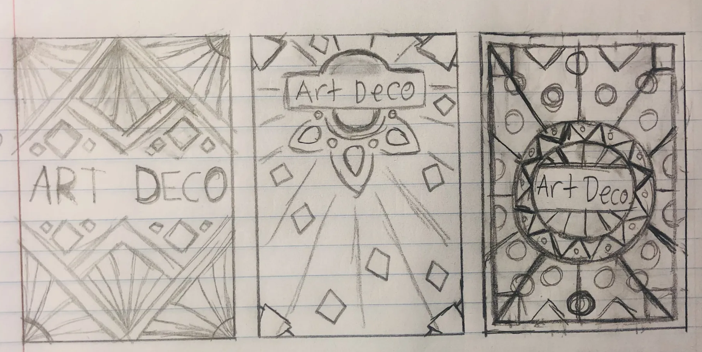
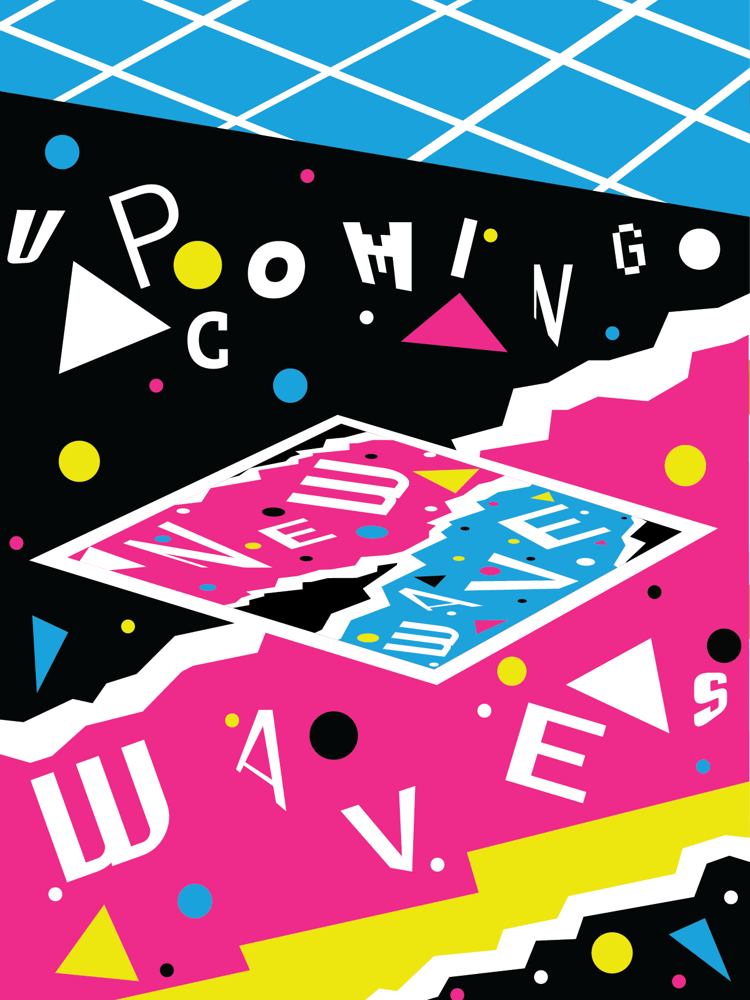
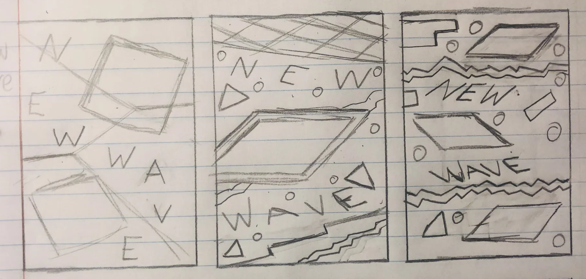
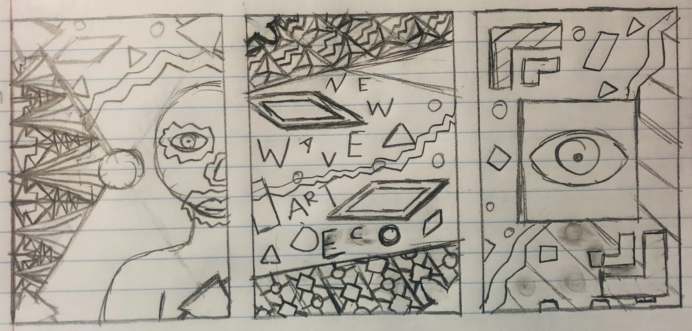

Art Movement Posters
This project shows the process work and final design for poster designs that are based on historical art movements. These are meant to be poster designs based on the art deco and new wave art movements, with one being a combination of the two movements.
Final Art Deco Poster

For the art deco poster, I used a color that was similar to gold, against black to highlight the gold and fit with the art deco style, while using a decorative font to help it fit in.
Art Deco Poster Sketches

When starting this project, I first did research on the art deco movement and studied images of what the art style looked like, including how it's done, and the colors commonly associated with it. When sketching out the initial ideas for the poster based on the art deco movement, I wanted it to feel as complex and detailed in its patterns and design as it was around the time of the movement, so I made the patterns in these sketches fairly complex and detailed.
Final New Wave Poster

For this one, I went with vibrant and saturated colors, as well as the use of random shapes and various different typefaces, to make it feel abstract and distinctive.
New Wave Poster Sketches

When researching the new wave movement, I studied images of what the style looked like, including how abstract and distinctive it was, and how the style seemed to pop, especially with the vibrant and saturated colors that were commonly used in them. For the sketches, I wanted to try and make something that seemed like it would fit in the era the movement came from, so I made the sketches have an abstract design, while also feeling a bit retro.
Final Combination Poster

For this one that combined the movements, I mostly went with the colors from the new wave poster, but I also included the pattern from the art deco style, and both styles of fonts/typefaces.
Combination Poster Sketches

For this sketch, I needed to combine the previous two movements and try and make them into one poster. I decided to try and combine the patterns from the art deco style, with the abstract and retro aspects of the new wave style, to make them fit and work well together.
Conclusion
I would say this project was good or the most part, my only challenge for this project however was the poster that combined the two movements, as it was hard to come up with a poster design that combined 2 very different art movements together, and I had to brainstorm very hard on how design that poster, but I'm satisfied with the end result, and the project as a whole.
Mockups